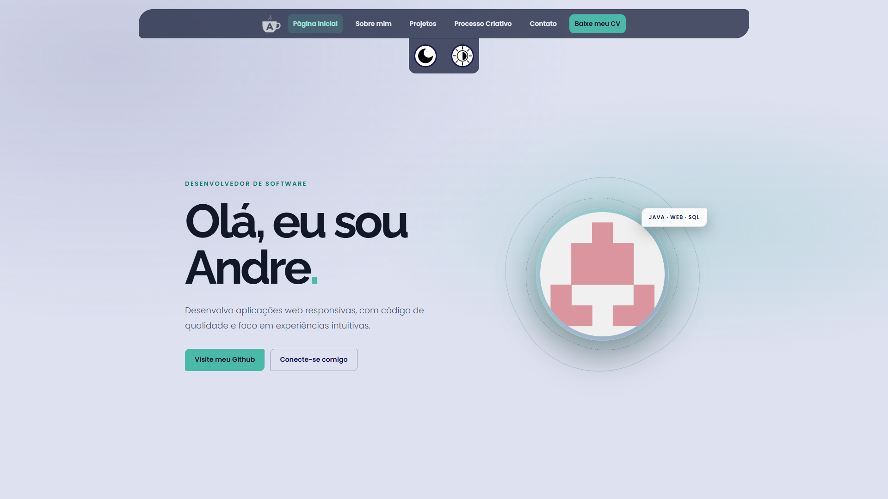

Site de Portfólio

Uma aplicação web em forma de portfólio que agrega vários aprendizados de HTML, CSS e Javascript.
Objetivo
Reunir em um único site minha trajetória como desenvolvedor, os projetos que construí e os conhecimentos que venho adquirindo. A navegação foi organizada em páginas próprias para facilitar a exploração do conteúdo e deixar cada assunto mais claro.
Tecnologias
HTML · CSS · JAVASCRIPT
Funcionalidades
O site inclui páginas de apresentação, projetos, processo criativo e contato; alternância entre temas claro e escuro com preferência salva no navegador; cards de projetos que expandem para mostrar detalhes; e formulário de contato integrado ao EmailJS, protegido por Google reCAPTCHA. A navegação entre páginas também apresenta uma tela de carregamento.
Implementação e aprendizados
O projeto foi construído com páginas HTML sem framework e estilos separados por responsabilidade. No desenvolvimento, pratiquei layout responsivo, componentes compartilhados para o cabeçalho, organização de estilos e variáveis CSS para centralizar cores e temas. Também implementei interações com JavaScript, atributos de acessibilidade para os controles e integração de serviços externos no envio do formulário.